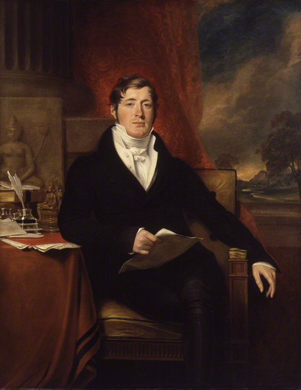

Mr. Herman Willem Daendels adalah seorang politikus Belanda
yang merupakan Gubernur-Jenderal Hindia-Belanda yang ke-36.
Ia memerintah antara tahun 1808 - 1811,
Masa itu Belanda sedang dikuasai oleh Perancis.
Tujuan utamanya adalah melindungi Jawa dari serbuan Inggris
A. Kebijakan Politik
- Membagi Pulau Jawa menjadi 9 residen
- Memangkas kekuasaaan sultan-sultan
B. Kebijakan Pertahanan
-Membangun Jalan Anyer-Panarukan
-Membangun benteng-benteng
-Membangun pabrik senjata
-Membangun pangkalan militer
C. Kebijakan Ekonomi
-Menerapkan kerja rodi
-Menerapkan wajib pajak
-Menerapkan Preangerstelsel

Sir Stamford Raffles, atau juga dikenal Thomas Stamford Raffles, merupakan seorang negarawan berkebangsaan Inggris. Dia adalah Gubernur Jenderal Hindia Timur, kemudian Gubernur Jenderal di Bencoolen yang kini bernama kota
Bengkulu, serta penemu Singapura modern. Salah satu karya pentingnya adalah menulis buku The History of Java, dan diabadikan sebagai nama Latin Bunga Bangkai, Raflessia arnoldii. dia berkuasa di Hindia-Belanda pada tahun 1811
sampai 1816. Dan berkuasa di Bencoolen (Bengkulu) pada tahun 1818-1824